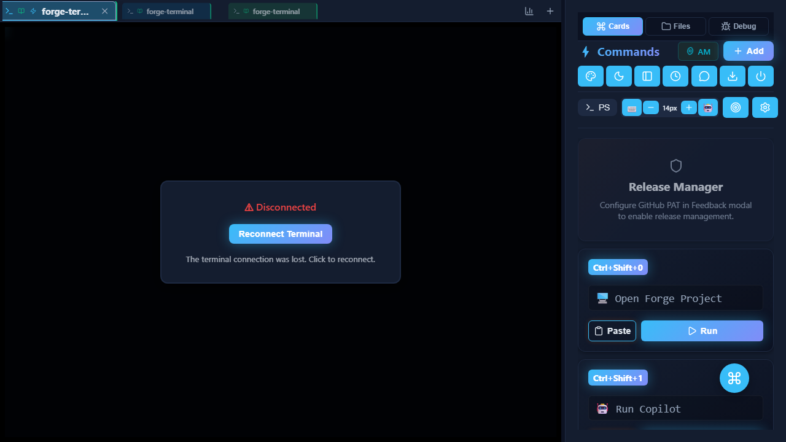
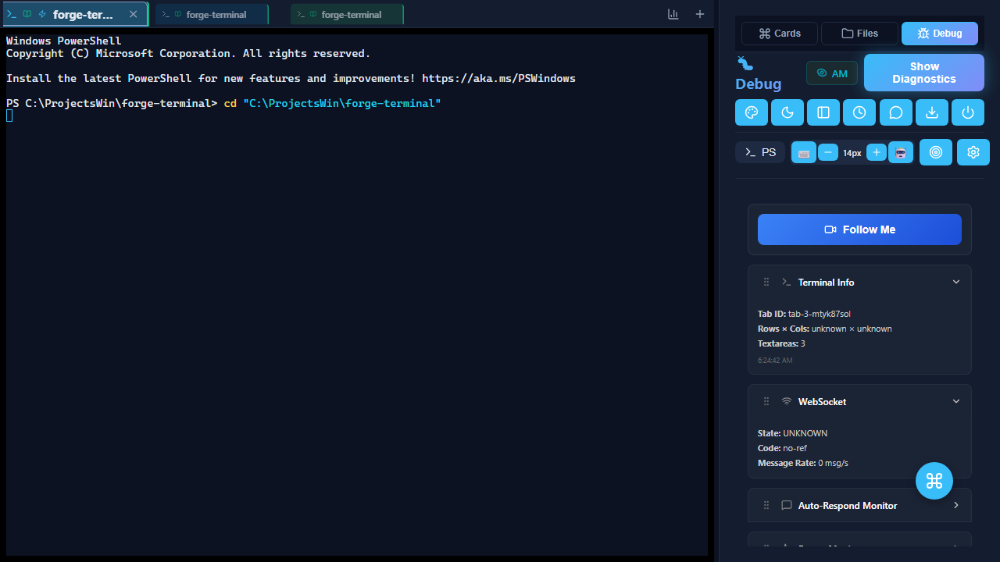

✓ FIXED
Executive Summary
Issue: Debug panel crashed immediately on click with "Cannot access 'captureKeystroke' before initialization" TDZ error in FollowMeDebugger component.
Root Cause: Callbacks referenced in useEffect dependency array before being defined with useCallback - minifier couldn't resolve initialization order.
Solution: Hoisted all 9 callback definitions before useEffect that references them. Simple reordering fix, no logic changes.
CODE FIX
Root Cause Visualization
graph TD
A[User Clicks Debug Tab] --> B[DebugPanel Renders]
B --> C[FollowMeDebugger Mounts]
C --> D[useEffect Line 40 Executes]
D --> E{Dependencies Available?}
E -->|❌ NO| F[TDZ Error: captureKeystroke]
E -->|✅ YES| G[Restore Session Logic]
F --> H[ErrorBoundary Catches]
H --> I[User Sees Error Screen]
style F fill:#ff6b6b
style I fill:#ff6b6b
style G fill:#51cf66
J[Callbacks Defined Line 115+] -.->|Referenced Before Definition| D
style J fill:#ffd43b
Problem Pattern:
// ❌ BEFORE (Lines 40-93)
useEffect(() => {
// ... restoration logic ...
window.addEventListener('keydown', captureKeystroke, true);
window.addEventListener('click', captureClick, true);
}, [captureKeystroke, captureClick, ...]); // ← TDZ! Referenced before definition
// ❌ Defined TOO LATE (Lines 115-253)
const captureKeystroke = useCallback((e) => { ... }, []);
const captureClick = useCallback((e) => { ... }, []);
Fixed Pattern:
// ✅ AFTER: Define callbacks FIRST (Lines 38-177)
const captureKeystroke = useCallback((e) => { ... }, []);
const captureClick = useCallback((e) => { ... }, []);
// ... 7 more callbacks ...
// ✅ THEN use them in useEffect (Lines 179-235)
useEffect(() => {
window.addEventListener('keydown', captureKeystroke, true);
window.addEventListener('click', captureClick, true);
}, [captureKeystroke, captureClick, ...]); // ← Now available!
PLAYWRIGHT TESTED
Test Evidence (TDD Protocol)

1. Before Debug Click

2. After Click - No Crash!
3. Debug Panel Rendered ✓
Test Results
✓ Debug Panel & Input Stability › Debug tab should render without ReferenceError crash (7.1s)
JS Bundle: index.DtOtdsNg.js
Console errors found: 0
✓ Debug Panel & Input Stability › Backspace key should work without freeze - long duration test (1.1m)
Test duration: 60486ms (60.5s)
Total iterations: 79
Total operations: 1413
Freeze threshold: 1500ms
Slow threshold: 800ms
Freeze events detected: 0
Slow events detected: 0
2 passed (1.3m)
Git Commit
commit 7b5d3c0
Branch: fix/debug-panel-freeze-v3.11.6
Fix: Debug panel TDZ crash - FollowMeDebugger callback hoisting
✓ Hoisted all callbacks before useEffect
✓ Removed duplicate definitions
✓ Tests pass with minified build
✓ Drag-and-drop still functional
✓ 60s stress test: 1413 operations, 0 freezes
Pushed to: https://github.com/mikejsmith1985/forge-terminal